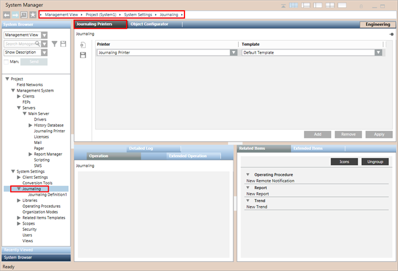

Journaling Printer – Template Map
In Engineering mode, when you select Journaling in System Browser, the Journaling Printers tab lets you map a journaling printer to a journaling template.
Each printer-template mapping occupies one row, and comprises a journaling printer linked to a template.

Journaling Printers
Select a journaling printer from the list of all the printers configured as journaling printers under Management System > Servers > Main Server.
The journaling feature requires a dedicated journaling printer to automatically print out a record when specified alarms, operator/system actions, or field conditions occur. It cannot be shared with printers serving other functions like Reports, Event List and so on.
The journaling printer can be a line printer or a page printer.
- On a line printer, journaling items are printed out automatically as they become available. Also, you can print multiple lines of text for any field using a line printer.
- On a page printer, the associated template sets how many items to print on a single page. journaling items accumulate in a buffer queue, and when there are enough to fill a page they are printed out. You can also manually flush (print out) the buffer queue.
Journaling Printer Notes
- On the OS supported by Desigo CC , you must install the original printer drivers of the EPSON LQ 2090 printer for working with Journaling. Do not rely on the printer drivers automatically installed by Windows when connecting the EPSON LQ 2090 printer with USB of the Windows computer.
- To avoid unnecessary form feeds caused by the journaling printer/template, you must do one of the following:
- In the printer’s default settings, set the page length for the tractor greater than or equal to the height of the page type configured in the selected journaling template. For example, if the paper type is set as A4 (height = 11.7 inches) in the selected template, you must set the paper length of the tractor to greater than or equal to 11.7 inches.
- Change the paper type in the journaling template to a paper length less than the page length for the tractor in the printer’s default settings. For example, if the height of the paper is 11 inches, then you need to set the paper type having length less than or equal to 11 inches. - The printer defined for a Printer-Template map becomes invalid and the Printer drop-down list shows
Unknown Objectwhen
- the Printer object is deleted.
- the journaling flag of a printer is changed to No. - If a configured page printer is not available, the qualified event is buffered in the event buffer queue available for that printer.
- The buffer limit for each printer is defined in the EventBufferSize component of the config file available under [installation drive:]\[installation folder]\[project].
- When buffered events reach the configured limit, the most recent event enters the queue and the oldest event is removed. The Log Viewer shows the relevant message for this change (loss of oldest event) and is also logged in the History DB. This continues for all successive qualified events until the printer becomes available.
- When a printer (that was unavailable) becomes available, all events in the event buffer queue begin to print. If a configured page printer is available but events are not printing, a message is logged in the History DB. If no printer is available, the events in the queue are lost.
- Date/time references in events are printed with respect to the time zone and the regional settings set on the server computer.
- You can print only in those languages that are supported by the journaling printer. For more information, see Line Printer does not Print a Desired Language.
- To print umlaut characters using a line printer, you must select the character table which supports these characters in the line printer's default settings. See Error Codes and their Meaning in Journaling.
Journaling Templates
The journaling templates offer a range of formats for printing. Each template that you configure is related to an individual project. Select one of the predefined templates. Alternatively, you can customize the default template or the UL template or create and configure your own user-defined templates.
- One journaling template can be mapped to multiple journaling printers. However, each journaling printer can only be mapped to one journaling template.
- Since the templates listed in the Template drop-down list display the list of all the title attribute values of the EventPrinterTemplate root tag, to avoid any duplicate template entries you must specify:
- a unique value for the title attribute of the EventPrinterTemplate root tag in the journaling template (Default, UL, and User-defined) file and
- a unique file name for a template located in:
[installation drive:]\[installation folder]\[project]\profiles\JournalingUserTemplates.
The following templates are provided:
Default Template
- The default template is a file named DefaultJournalingTemplate.xml located at:
[installation drive:]\[installation folder]\[project]\profiles.
A file named JournalingTemplateSchema.xsd present in the same folder acts as the schema for the construction of the journaling templates. - The default template contains the following configurable printing components:
- The name specified in the title attribute in the root tag. This displays in the Template drop-down list of the printer-template mapping section of journaling printers.
- Paper types, sizes in inches, and orientation
- Page header
- Page footer
- Field definitions
- Event field sequence
- Column delimiter
- Message (event) delimiter
- Message limit (number of events to be printed batch on page printer)
- Font name and size for event details printing (page printer only)
- Font name and font size for header and footer (page printer only)
- Width, alignment, of every printing field (page printer only)
- Sequence of every printing field
- Columns (event information) to be printed
- Event Occurrence Time
- Current State
- Text Associated
- Transition Time
- Event Source
- Category
- Event Source Path
- Activity Error Message
- Language code for printer enumerated values
- Printing presentation style of object names of event source
- Printing presentation style for path of event source
- UL template
UL Template
The UL template is a file named JournalingTemplate_UL.xml located in the folder:
[installation drive:]\[installation folder]\[project]\profiles\JournalingUserTemplates.
The UL template has an optimized layout and contains the following four columns:
- Transition Time
- Current State
- Event Source
- Event Source Path
The UL template has a condensed layout which results in a faster printout.
User-Defined Template
You can define your own template for printing the qualified journaling events. You can modify it then and should save user-defined templates at:
[installation drive:]\[installation folder]\[project]\profiles\JournalingUserTemplates.
Make sure you save it with a unique name other than the names of the template files available in the folder...\JournalingUserTemplates. Otherwise, the customization changes are lost after project upgrade.
- User-defined templates must adhere to the rules specified in the JournalingTemplateSchema.xsd available under:
[installation drive:]\[installation folder]\[project]\profiles. - The system uses the default template for printing if the user-defined template mapped to a journaling printer is invalid.
- Each time you map a printer-template entry containing a user-defined template and save it, the user-defined template file is checked for validity. If it contains any schematic/syntactic XML errors, the respective error message is shown in the Log Viewer and the default template is used for printing.
Template with Extended Size for Event Occurrence Time
The template with extended size for Event Occurrence Time is a file named OccurrenceTime_TwoInches_Template.xml located in the folder
[installation drive:]\[installation folder]\[project]\profiles\JournalingUserTemplates.
Use this template to increase the width of the Event Occurrence Time column in the journaling printout.
Alias with Extended Event Occurrence Time
The Alias With Extended Occurrence Time is a file named Alias_with_extended_Event_Occurrence_Time.xml located in the folder
[installation drive:]\[installation folder]\[project]\profiles\JournalingUserTemplates.
Use this template to print the alias of an object in the journaling printout. Alias is specified at the object level. However, when an event source is a property, the alias associated with its object gets printed. So alias of an object is applicable to all its properties.